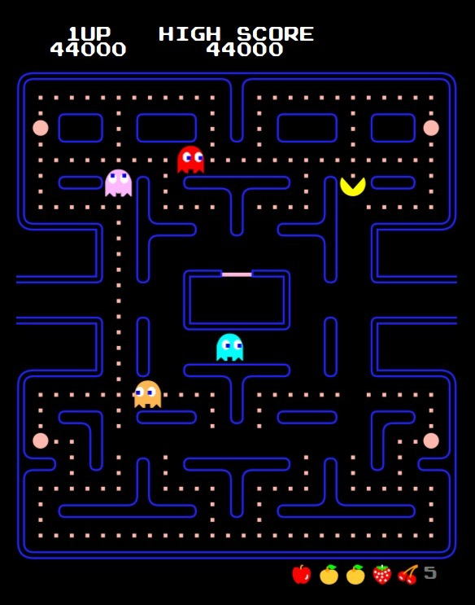
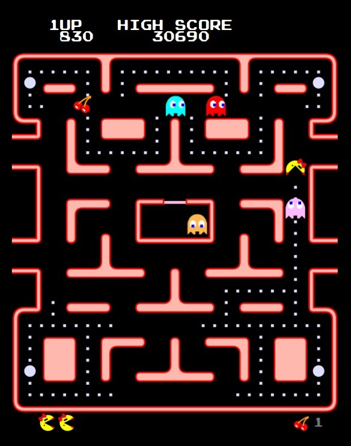
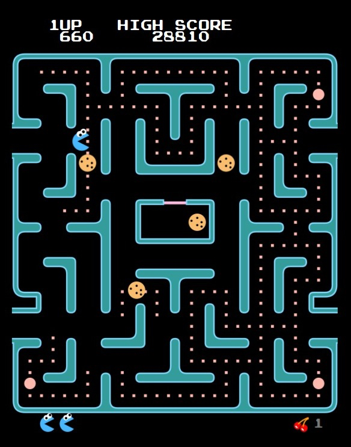
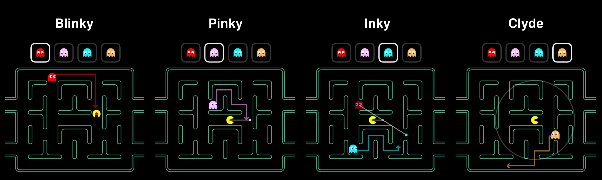
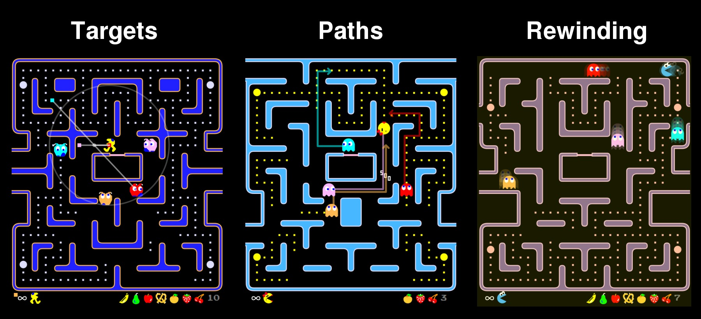

PAC-MAN
El icónico juego de laberinto arcade, ahora en tu navegador
🇪🇸 Juego HTML5 Gratis
JUGAR AHORASobre el Juego
Pac-Man es uno de los juegos arcade más populares jamás creados. Lanzado por primera vez en 1980, este icónico juego ha entretenido a generaciones de jugadores con su jugabilidad simple pero adictiva. Navega por laberintos, come todos los puntos, evita a los fantasmas y persigue altas puntuaciones en este clásico atemporal.
Jugabilidad Clásica
Experimenta la jugabilidad original de Pac-Man con gráficos, sonidos y mecánicas auténticas como en la versión arcade.
Gratis para Jugar
Sin descargas, sin suscripciones y sin anuncios. Solo abre tu navegador y comienza a jugar al instante.
Múltiples Versiones y Modos
Experimenta múltiples versiones clásicas y modos de juego, incluyendo el Pac-Man original, Ms. Pac-Man y el innovador Cookie-Man.
Versiones del Juego
Ofrecemos varias versiones clásicas del juego Pac-Man, cada una con sus características y jugabilidad únicas. ¡Elige tu versión favorita y comienza a jugar!
Pac-Man
El clásico arcade original de 1980 por Namco. Experimenta la jugabilidad más auténtica de Pac-Man, persigue altas puntuaciones y evita a los fantasmas.

Ms. Pac-Man
La modificación de 1981 por GCC/Midway. Presenta más laberintos y mecánicas de juego mejoradas, convirtiéndose en una secuela clásica.

Cookie-Man
Una versión completamente nueva que presenta un sofisticado generador de mapas procedural. Cada nivel presenta un laberinto diferente.

Modos de Juego
Cada versión ofrece múltiples modos de juego para satisfacer diferentes necesidades y preferencias de los jugadores. ¡Desde principiantes hasta expertos, hay un modo para todos!
Modo Aprendizaje
El Modo Aprendizaje te permite visualizar los comportamientos de los fantasmas. Los cuadrados de colores representan los objetivos de los fantasmas, ayudándote a entender cómo funciona la IA de los fantasmas y mejorar tu estrategia de juego.

Modo Práctica
Este modo proporciona características especiales como cámara lenta, rebobinado de tiempo, invencibilidad y visualización del comportamiento de los fantasmas. Perfecto para jugadores que quieren dominar el juego, estudiar sus mecánicas y mejorar sus habilidades.

Modo Turbo
Una modificación de hardware popular que se encuentra en las máquinas arcade originales. En este modo, Pac-Man se mueve el doble de rápido (coincidiendo con la velocidad de los ojos de los fantasmas) y no se ralentiza al comer pastillas. ¡Perfecto para jugadores que buscan un mayor desafío!
Controles
Los controles de Pac-Man son simples e intuitivos, adecuados para jugadores de todas las edades. A continuación se muestran los controles principales y operaciones adicionales para modos especiales.
Controles Principales
- Deslizar: Dirige a Pac-Man en dispositivos móviles
- Teclas de Flecha: Controla el movimiento de Pac-Man
- Tecla End: Pausa el juego
- Tecla Esc: Abre el menú del juego
Controles Extra del Modo Práctica
- Shift: Mantén presionado para rebobinar el tiempo (como en Braid)
- 1: Mantén para ralentizar la velocidad del juego a 0.5x
- 2: Mantén para ralentizar la velocidad del juego a 0.25x
- o: Alternar el modo Turbo de Pac-Man
- i: Alternar la invencibilidad de Pac-Man
- q,w,e,r,t: Alternar gráficos objetivo para Blinky, Pinky, Inky, Clyde y Pac-Man